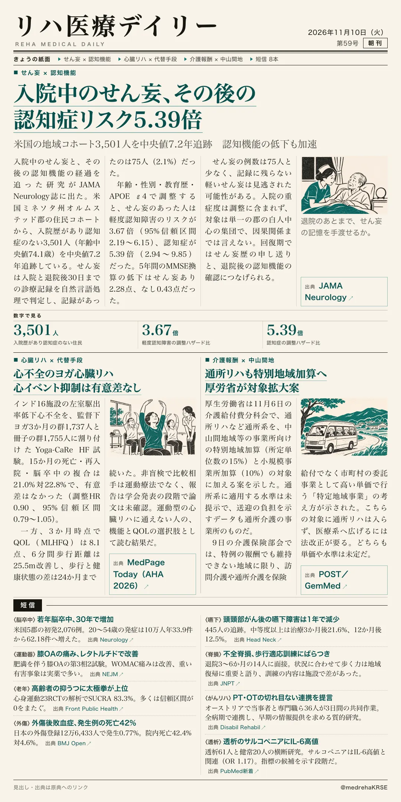
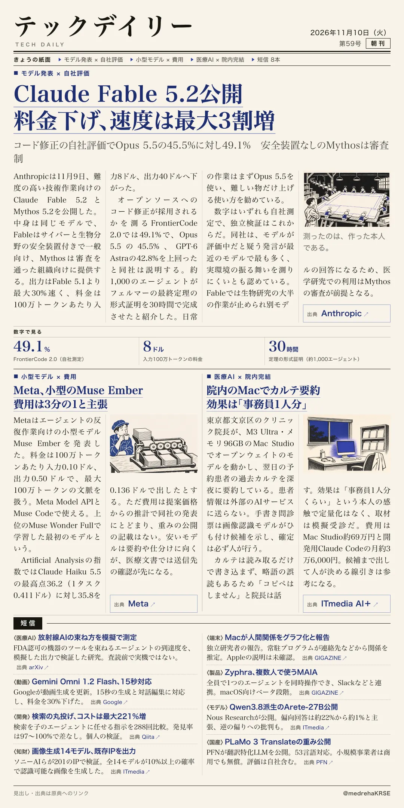

リハ医療デイリー
入院中のせん妄、その後の認知症リスク5.39倍
米国の地域コホート3,501人を中央値7.2年追跡 認知機能の低下も加速
認知症のない入院経験者を追った観察研究。

テックデイリー
Claude Fable 5.2公開 料金下げ、速度は最大3割増
コード修正の自社評価でOpus 5.5の45.5%に対し49.1% 安全装置なしのMythosは審査制
Anthropicが難度の高い技術作業向けの新版を発表。

米国の地域コホート3,501人を中央値7.2年追跡 認知機能の低下も加速
認知症のない入院経験者を追った観察研究。

コード修正の自社評価でOpus 5.5の45.5%に対し49.1% 安全装置なしのMythosは審査制
Anthropicが難度の高い技術作業向けの新版を発表。
